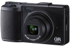

器材库 > 不可换镜头数码相机 > GR DIGITAL IV

规格总览
发布日期
2011-09-15
厂家推荐价格
80,000.00 （日元）
防水
否
影像规格
影像传感器
CCD
影像传感器尺寸
1/1.7英寸
总像素
1040万
有效像素
1000万
影像处理器
GR ENGINE IV
静态图像尺寸
3648×2736、3648×2432、2736×2736、3648×2048、3264×2448、 2592×1944、2048×1536、1280×960、640×480
静态图像格式
JPEG, RAW
画幅比
4:3
短片尺寸
640x480(30fps)
短片格式
AVI
镜头和对焦
镜头结构
8片/6组
非球面镜片
2片
焦距
6mm
等效35mm画幅焦距
28mm
最大光圈
f/1.9
数码变焦
4倍
最近对焦距离
30cm, 微距1cm
AF辅助灯
有
手动对焦
支持
曝光控制
测光模式
中央重点测光, 多分区评价测光, 点测光
曝光模式
Auto, P（程序自动曝光）, A（光圈优先自动曝光）, S（快门速度优先自动曝光）, M（手动测光曝光）
快门速度
1/30-1/2000
曝光补偿
±2EV以1/3EV级调整
自动曝光锁
有
自动包围曝光
（-0.5 EV、±0、+0.5 EV/-0.3 EV、±0、+0.3 EV）
ISO感光度
64, 80, 100, 200, 400, 800, 1600, 3200, 自动
白平衡
多云, 白炽灯, 自定义, 自动
自拍
自定义, 10秒, 2秒
连拍
15.4fps,最多999张
闪光灯
内置闪光灯
弹出式
闪光模式
自动
闪光涵盖范围
约20cm 至3.0m（ISO 自动）
闪光补偿
±2EV以1/3EV级调整
取景规格
LCD类型
彩色TFT LCD
LCD尺寸
3.0英寸
LCD像素
123万
文件输入/输出
内置存储容量
40MB
存储卡
SD/SDHC
数据接口
USB2.0
视频/音频接口
AV 输出
电源
电池
充电电池：DB-65
续航能力
390张
外观
颜色
黑色, 白色
尺寸
108.6x 59.8x 25.5mm
重量
190g
karfen2014-02-16 22:014.69 分
操作性 5.00功能性 5.00美观性 5.00趣味性 4.00耐用性 4.00性价比 4.50解像力 5.00色彩还原 5.00
arondes2012-08-05 03:384.5 分
操作性 4.50功能性 5.00美观性 5.00趣味性 4.50耐用性 5.00性价比 3.00解像力 4.50色彩还原 4.50
rd8888qq2012-01-10 19:314.5 分
操作性 4.50功能性 4.50美观性 5.00趣味性 4.50耐用性 4.50性价比 3.50解像力 4.50色彩还原 5.00
011820112011-10-29 17:26
产品图 / 样片
评测 / 相关文章
- 详细内容 （存档）
- 理光GR DIGITAL IV详尽评测 （存档）
- ［资讯］理光GR DIGITAL IV 固件再次升级 （存档）
- ［资讯］理光公布GR DIGITAL IV最新固件 （存档）
- ［资讯］理光GR DIGITAL IV美国上市 （存档）
- ［影像］理光GR DIGITAL IV样片赏析 （存档）
- ［资讯］2011年第三十七周新品一览 （存档）
- ［资讯］理光发布GR DIGITAL IV限量版颜色机型 （存档）
- ［资讯］理光发布GR DIGITAL IV （存档）
- ［资讯］理光GR DIGITAL IV白色版10月限量发售 （存档）